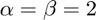
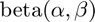
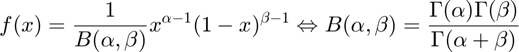
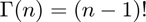
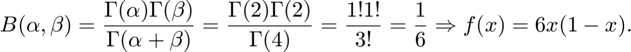
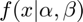
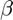
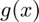
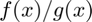

Acceptance-rejection method
Generate samples of a beta distribution with  using an acceptance-rejection method.
Contents
Beta distribution
The beta distribution, , has the general form,

with . One useful property of the gamma function when its argument is an integer is that . Therefore,

This makes it evident that the behaviour of  changes its behavior drastically with different values of and . That is why the code here is not general and not easy to generalize to every beta distribtuion.
Sampling
The acceptance-rejection method implies that samples are generated from a known distribution () with the same range as the wanted, and that sample distribution is corrected afterwards by the ratio of distributions , so that some samples are rejected. The final instances of the final distribution are only the accepted samples.
Parameters
a = 2; % alpha b = 2; % beta c = 2/3; % ratio constant n = 1000; % generated pdf_unif = 1; pdf_beta = @(x) 6 * x .* (1-x);
Sample Generation
tic; uz = rand(n/c, 2); u = uz(:,1); z = uz(:,2); x = z; % treat as Not a Number (NaN) rejected samples x(u > c * pdf_beta(z) / pdf_unif) = NaN; toc; muhat = mean(x,'omitnan'); sigmahat = var(x,'omitnan');
Elapsed time is 0.008317 seconds.
Output resutls
% expectation and variance of the beta distribution mu = a/(a + b); sigma = a * b / ((a + b)^2 * (a + b + 1)); disp(['The mean of our samples is ' num2str(muhat)]) disp(['while its expected value is ' num2str(mu)]) disp(' ') disp(['The variance of our samples is ' num2str(sigmahat)]) disp(['while its expected value is ' num2str(sigma)])
The mean of our samples is 0.50605 while its expected value is 0.5 The variance of our samples is 0.048742 while its expected value is 0.05
Author: Alejandro Madriñán Fernández